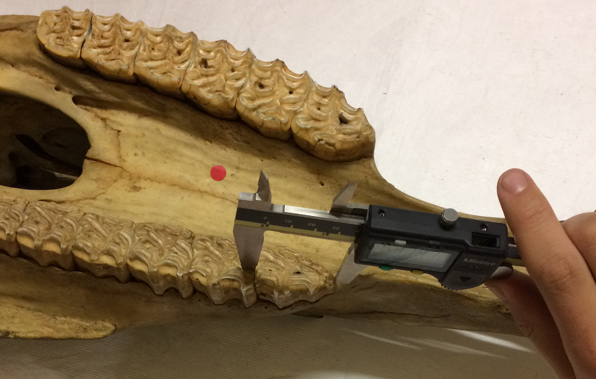
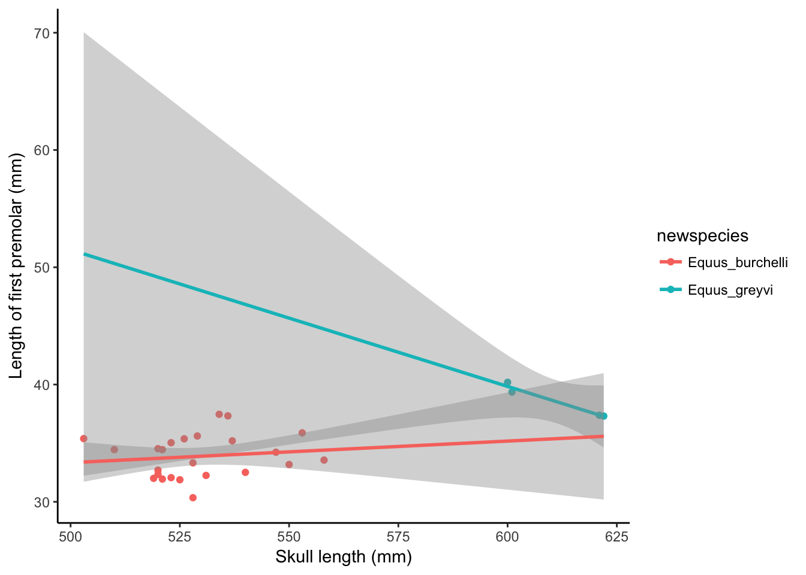
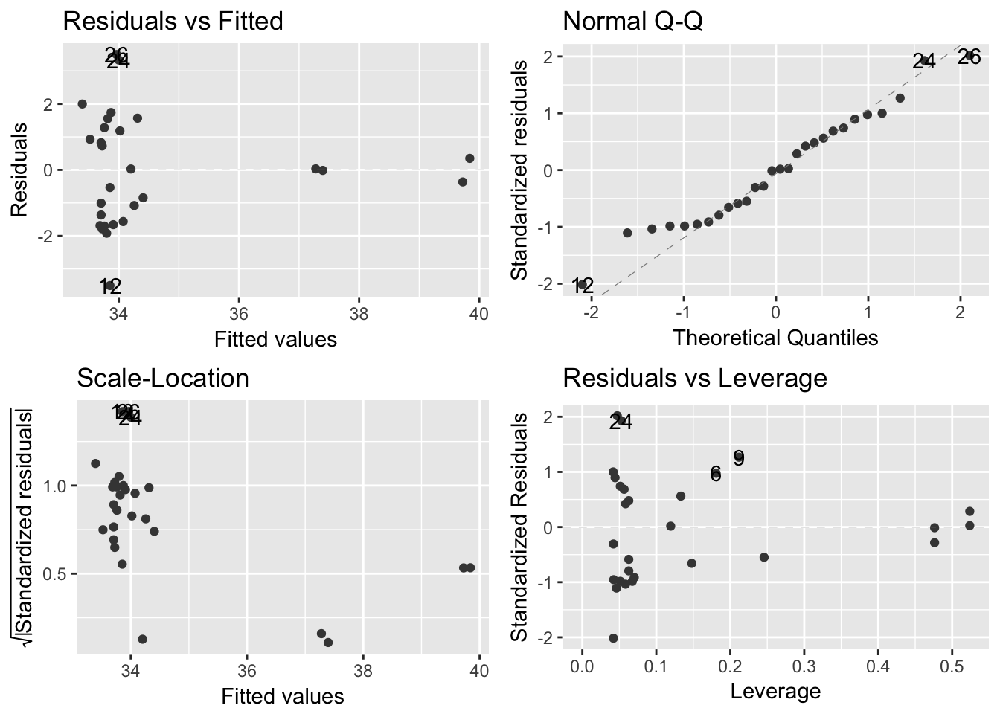

Zebra skull analysis
Joe Bostok-Jones, Joe Broomfield, Matthew Greenwell, Heather Lang, Jessica Ward
17 May 2017
Abstract
- Black with white stripes or white with black stripes?
- Does anyone actually care?
Introduction
- We investigated allometry in adult zebras using measurements taken from museum specimen skulls
- We wondered what things might predict tooth length (don’t we all?!)
- At this point we would usually:
- write a bit about about why we are doing this study
- maybe give you some nice zebra facts
- As we are lacking in zebra information, however, we have included a fun zebra gif for you

Dancing zebra!! Woohoo
Methods
Sample description
- Adult zebra skulls were sampled from the collections of the Natural History Museum, London, UK
Measurements
- Skull length was measured using a rule placed on the table
- Each skull was placed beside the rule so that the ventral surface of the upper jaw was displayed
- An exercise book was placed at the posterior and anterior of each skull and the distance between the two was measured (Figure 1)

- Premolar one (P1) on the left hand side of each skull was measured using a pair of calipers (Figure 2)
- 
Statistical analyses
- Analyses of predictors of P1 molar length were conducted in R version 3.4.0 (2017-04-21)
Results
Sample description
- All skulls sampled (N = 28) were included in the analyses
- The skulls belonged to 2 species of zebra; Equus grevyi (n = 4) and Equus burchelli (n = 24)
- An unknown number of Equus zebra skulls were stuck in cupboards that would not unlock, and could not be included in the sample, as criminal damage is a bad thing
- The mean skull length was 540.9 mm (SD = 31.86) and the mean P1 premolar length was 34.55 mm (SD = 2.421)
- The full dataset and metadata are available as supplementary material [insert copyright details here when we have had the session on it]
Analysis 1: ANOVA predicting P1 molar length given skull length
- In the initial linear regression, P1 molar length was significantly predicted by skull length (Table 1)
- The model coefficients indicated that an increase in skull length of 1 cm predicted an increase in P1 molar length of 0.5 mm.
Table 1. ANOVA results
| term | df | sumsq | meansq | statistic | p.value |
|---|---|---|---|---|---|
| skull_length | 1 | 65.11 | 65.11 | 18.18 | 0.0002344 |
| Residuals | 26 | 93.13 | 3.582 | NA | NA |
Figure 3. Model and coefficients
| term | estimate | std.error | statistic | p.value |
|---|---|---|---|---|
| (Intercept) | 8.18 | 6.194 | 1.32 | 0.1982 |
| skull_length | 0.04874 | 0.01143 | 4.264 | 0.0002344 |
Analysis 2: ANCOVA predicting P1 molar length given skull length and species
- As mean skull length was numerically larger in Equus Greyvi than in Equus Burchelli (Figure 3), an ANCOVA predicting P1 molar length given skull length and species was run
- When the species were considered separately:
- skull length did not predict P1 molar length in Equus Burchelli (Table 2, Figure 4).
- the difference between species was not statistically significant, although there were only 4 Equus Greyvi skulls in the sample
Table 2. ANCOVA results
| term | df | sumsq | meansq | statistic |
|---|---|---|---|---|
| skull_length | 1 | 65.11 | 65.11 | 20.65 |
| newspecies | 1 | 10.22 | 10.22 | 3.243 |
| skull_length:newspecies | 1 | 7.248 | 7.248 | 2.299 |
| Residuals | 24 | 75.66 | 3.152 | NA |
| p.value |
|---|
| 0.0001322 |
| 0.08432 |
| 0.1425 |
| NA |
Figure 4. Model and coefficients
| term | estimate | std.error |
|---|---|---|
| (Intercept) | 24.14 | 14.77 |
| skull_length | 0.01839 | 0.0279 |
| newspeciesEquus_greyvi | 85.58 | 53.68 |
| skull_length:newspeciesEquus_greyvi | -0.1349 | 0.08894 |
| statistic | p.value |
|---|---|
| 1.635 | 0.1152 |
| 0.6593 | 0.516 |
| 1.594 | 0.1239 |
| -1.516 | 0.1425 |
Figure 5. Check of model assumptions (ANCOVA)
- The relatively small number of Equus Greyvi data points (larger skull sizes) looked over-fitted compared with the Equus Burchelli data points (Figure 5).

Suggestion for further work: multivariate analysis
Acknowledgements
- Natalie Cooper
- Acknowledgement
Backup slides
Check of model assumptions (ANOVA)
